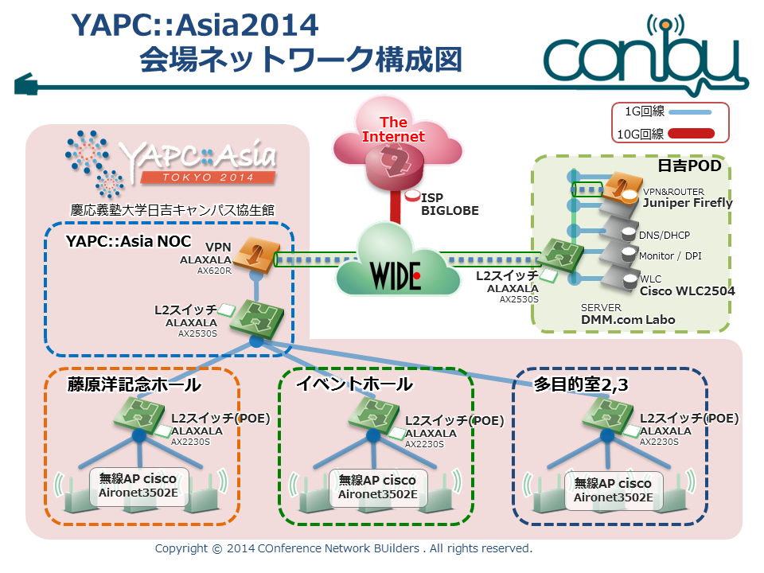
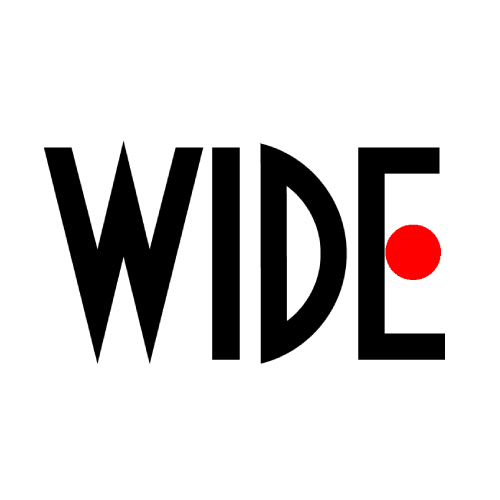

![Aug. 28, 29, 30 at KEIO Univ. Hiyoshi Campus [There Is More Than One Way To Enjoy It!]](../static/images/header_date_l.png)
会場ネットワーク / Network at the Venue
YAPC::Asia2014はアラクサラネットワークス、DMM.comラボ、シスコシステムズ、ジュニパーネットワークス、ビッグローブ、WIDEプロジェクト及びCONBU（敬称略）のご協力により会場ネットワークが提供されています。
WiFi network for YAPC::Asia Tokyo 2014 is made possible by ALAXALA Networks Corporation, DMM.com Labo, Cisco Systems G.K., Juniper Networks, K.K., BIGLOBE Inc., WIDE PROJECT, and CONBU.
ポータブルWiFi等をお持ちの方は必ず電源をオフにしてください。 安定した会場ネットワーク運営に大きな支障をきたす可能性がありますので、ご注意ください。
If you are carrying your own portable WiFi device (such as tethering devices) PLEASE TURN THEM OFF. These devices may interfere with the venueʼ's network.
SSIDs
- yapc2014 IEEE802.11a 推奨
- yapc2014-g IEEE802.11g

- IEEE802.11a対応の端末では、できる限り"yapc2014"(IEEE802.11a 5GHz帯)をご利用ください。会議場の環境特性により"yapc2014-g"(IEEE802.11g 2.4Ghz帯)につながらない場合があります。
- 会場ネットワークの運営に影響を与える(不正DHCP/DNS等)端末は、会場ネットワークへの接続を拒否することがあります。
- 会場ネットワークに関する相談はTwitter経由、またはお近くのYAPCスタッフ経由でCONBUメンバに連絡して下さい。
- @conbu_net ハッシュタグ:
#yapc2014_conbu
- If you are using IEEE802.11a compatible device, please use the yapc2014(IEEE802.11a 5GHz)network. You may not be able to use the yapc2014-g(IEEE802.11g 2.4Ghz).
- If your device is believed to be affecting the proper operation of the WiFi network (such as useof invalid DHCP/DNS), we may deny connection to the network.
- If you have any questions about the network, please ask via Twitter ( @conbu_̲net, hashtag:#yapc2014-conbu) or a nearby YAPC staff
技術協賛各社の紹介
アラクサラネットワークス
会場スイッチ、バックボーンスイッチのご提供DMM.comラボ
会場運営サーバ、準備会場の提供シスコシステムズ
無線アクセスポイント、無線アクセスポイントコントローラの提供ジュニパーネットワークス
仮想ルータの提供ビッグローブ
バックボーン回線の提供
